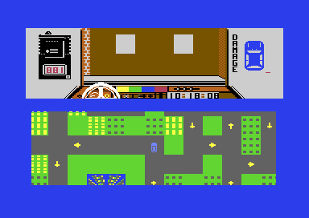
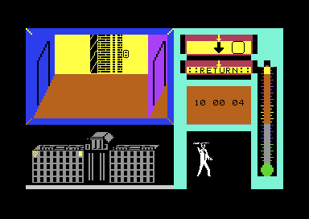
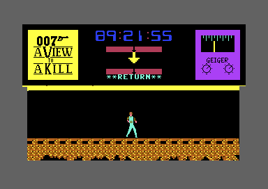
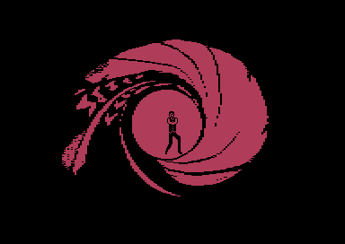

<meta charset="utf-8">
<meta name="viewport" content="width=device-width, initial-scale=1">
<title>{{title}}</title>
<link rel="preconnect" href="https://fonts.googleapis.com">
<link rel="stylesheet" href="https://fonts.googleapis.com/css2?family=Lato:wght@400;700;900&family=IBM+Plex+Mono:wght@400;500&display=swap">
<link rel="stylesheet" href="reference/avtak-page.css">
<!-- tabs -->
<header class="hero">
  <p class="eyebrow">{{platform}} · {{year}} · {{publisher}}</p>
  <h1>{{title}}</h1>
  <p class="sub">Domark’s first Bond film tie-in turns a parachute chase, a burning building, and a threatened mine into three different games. Softstone programmer Grant Harrison remembered nights spent sleeping under his desk to get it finished.</p>
</header>
<main class="wrap">
<section id="game">
  <p class="fig">01 · The game</p>
  <h2 class="t">From Paris to Silicon Valley</h2>
  <p>May Day has jumped from the Eiffel Tower, and Bond needs to catch her. You drive through Paris with a view through the windscreen above a map of the surrounding streets. Police cars and roadblocks obstruct the chase while an altimeter tracks her descent. Reaching her means finding the right street before she touches down.</p>
  <figure class="overview-shot"><figcaption>The windscreen shows the road ahead; the map below helps you navigate. May Day’s falling altitude sets the deadline for the chase.</figcaption></figure>
  <p>City Hall changes the pace. Bond must search a burning building for objects, work out how to use them, and lead Stacey Sutton to safety. Keys open routes through the rooms, buckets of water hold back the fire, and useful objects are selected through scrolling icon and command menus.</p>
  <figure class="overview-shot"><figcaption>The room occupies the upper left of the display. Beneath it, a miniature City Hall shows where fire is spreading through the building.</figcaption></figure>
  <p>The final mission sends Bond underground to stop the villain Max Zorin’s bomb. The mine scrolls around him as he jumps gaps, climbs ropes, and rides conveyor belts. Progress depends on finding equipment and using it in the right places: clearing rockfalls frees May Day, and assembling a winch opens the way towards the conclusion.</p>
  <figure class="overview-shot"><figcaption>The mine combines platform movement with an inventory puzzle. Falls and hazards cost time from the countdown above Bond.</figcaption></figure>
  <p>Each completed mission supplies a code for the next. On the disk examined here, the player returns to a menu to load each section separately. An animated opening and a short ending frame the three playable missions.</p>
</section>

<section id="makers">
  <p class="fig">02 · The makers</p>
  <h2 class="t">The team behind the mission</h2>
  <p>The opening credits name Tigress Marketing Ltd for game design, with thanks to David Bishop and Chris Palmer. Programming is credited to Softstone Ltd, thanking Tony Knight and his team: Daryl Bowers, Gary Burfield-Wallis, Grant Harrison, Garry Knight, and Argentino Trombin.</p>
  <p>Nichola Blades and Robert Ritson receive thanks for help with the graphics. Tony Crowther is thanked for arranging the music, David Aubrey-Jones for speech synthesis, and Malcolm for further help. Those are the credits in Domark’s original disk version; later accounts differ over the division of work between platforms.</p>
  <p>Harrison joined Softstone when the new London company was recruiting for the Bond project. In his 2015 interview with C64.COM, he recalled sleeping under his desk to meet the deadline. The idea seemed reasonable to him, but the team had too little time and too few resources to bring it together. It was his first job at Softstone, and he described the result as “not one of my best!” <a href="https://www.c64.com/gt_display_interview.php?interview=38">Grant Harrison interview, C64.COM</a></p>
</section>

<section id="presentation">
  <p class="fig">03 · Presentation</p>
  <h2 class="t">Bringing Bond onto the screen</h2>
  <p>The opening attempts the film’s familiar gun-barrel sequence. Bond walks into view, turns towards the audience, and fires; blood colours the picture. The credits and a spoken introduction complete the presentation before the missions begin.</p>
  <figure class="overview-shot"><figcaption>Bond turns and fires during the opening. The white gun-barrel picture turns red after the shot.</figcaption></figure>
  <p>The music carries that connection into play. Crowther’s arrangements draw on the James Bond theme and Duran Duran’s title song. Speech marks success and failure in Paris, including “Well done, 007” after a catch. The <a href="music.html">Music and speech page</a> lets you hear both tunes and the spoken lines.</p>
</section>

<section id="reception">
  <p class="fig">04 · Reception</p>
  <h2 class="t">Three games for £10.99</h2>
  <p><i>Zzap!64</i> reviewed the cassette release at £10.99 in August 1985. Its reviewers questioned whether dividing the game into three styles had produced enough substance in any of them.</p>
  <p>Gary Penn found the driving awkward and the adventure sparse, although he preferred City Hall to the other sections. Paul Sumner thought the option to play each mission separately was useful, but found too little to sustain repeated attempts. The magazine awarded 36%, concluding: “A powerful idea that seems to have missed its point.” <a href="https://www.zzap64.co.uk/magazine/zzap64/4/review/view-to-a-kill-a"><i>Zzap!64</i>, issue 4, pages 23–24</a></p>
  <p>Other reviewers were more receptive. Ken McMahon’s <i>Commodore User</i> review called it one of the better film adaptations, while Jayne Goin’s <i>Your Commodore</i> review criticised the balance between effects and gameplay. Their disagreement captures the question the package posed: how much did recreating Bond’s scenes contribute to the experience of playing them? <a href="https://en.wikipedia.org/wiki/A_View_to_a_Kill_(video_game)#Reception">Review summaries</a>, <a href="https://www.lemon64.com/game/view-to-a-kill">reviewer credits</a></p>
</section>

<section id="findings">
  <p class="fig">05 · Looking inside</p>
  <h2 class="t">What happens behind the scenes</h2>
  <p>The police pursuit has a concrete explanation. Whenever Bond leaves a junction, the game records the direction he took in that junction’s map cell. Police cars read those directions and follow his route through Paris. The <a href="levels.html#paris">Paris section</a> explains how the pursuit and May Day’s descent work.</p>
  <p>The mission codes have a less visible consequence. Skipping the password lets you practise the next mission, but its normal completion check will refuse to award a win. Without the code, City Hall restarts at the exit; the mine detonates the bomb even when the correct digits have been entered. The <a href="mechanics.html#codes">password explanation</a> shows exactly what each code permits.</p>
  <p>City Hall also contains a shortcut its designers are unlikely to have intended. If Bond’s room catches fire after the correct mission code has been entered, the game declares the mission complete. A faulty branch sends execution into the completion check, bypassing the rescue. The <a href="maps.html#city-hall">City Hall map</a> shows the spread of fire alongside the intended escape route; <a href="discoveries.html#city-hall">Discoveries</a> explains the mistake.</p>
  <p id="versions">These pages describe Domark’s original PAL disk, labelled THRILLER PACK. A cracked copy examined alongside it differs in its music timing and several details of play. The <a href="about.html#copy">About page</a> records those differences and the sources behind the account.</p>
</section>
</main>
